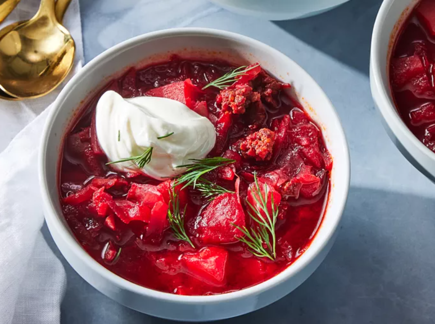

Home
Borscht

Description
Borscht is a classic beet soup that's so comforting and delicious. This recipe comes from my Ukrainian friend's mother, who taught me how to make it.
Ingredients
- Sausage
- Vegetables
- Canned tomatoes
- Vegetable oil
- Water
- Garlic
- Sugar
- Seasonings
- Sour cream
- Fresh herbs
Steps
- Gather all ingredients.
- Crumble sausage into a skillet set over medium-high heat. Cook and stir until no longer pink. Remove from the heat and set aside.
- Fill a large pot halfway with water (about 8 cups) and bring to a boil.
- Add sausage to pot, cover pot, and return to a boil. Add beets and simmer for 10 minutes. Add carrots and potatoes and continue to cook until potatoes are tender, about 10 minutes more. Stir in cabbage and tomatoes.
- Heat oil in a skillet over medium heat. Add onion and cook until tender. Stir in tomato paste and remaining 3/4 cup water until well blended; transfer to the pot.
- Add garlic to the soup, cover, and turn off the heat. Let stand 5 minutes. Stir in sugar and season with salt and pepper.
- Ladle into serving bowls. Garnish with sour cream and dill. Enjoy!